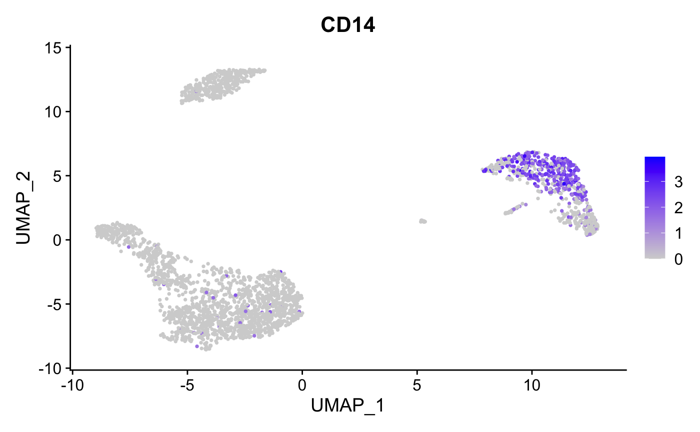
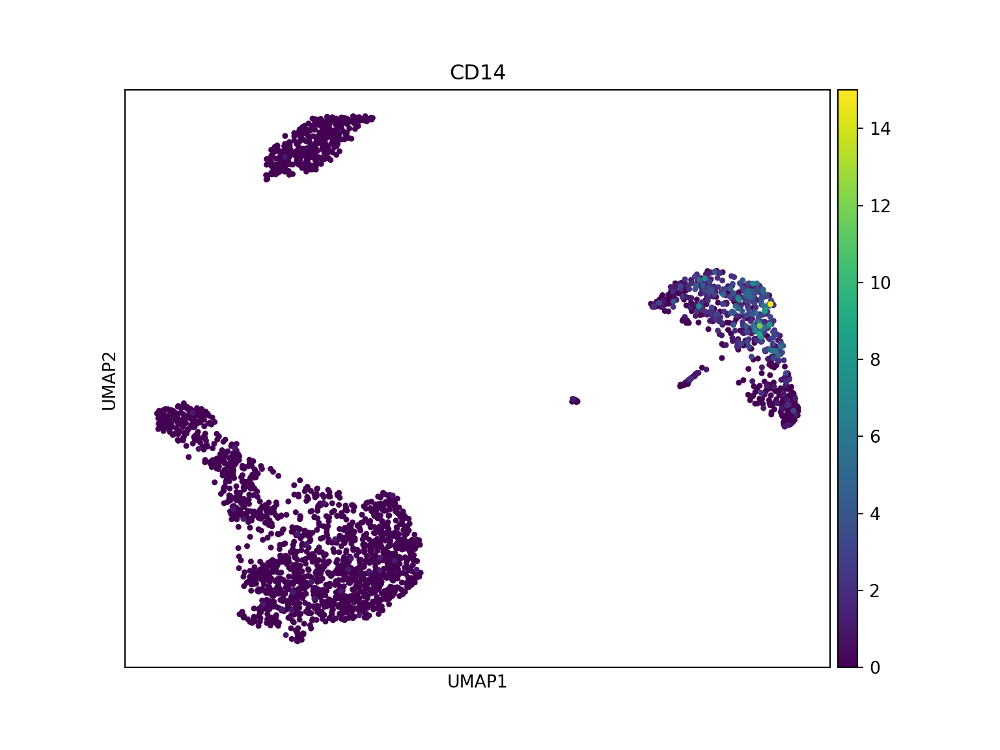
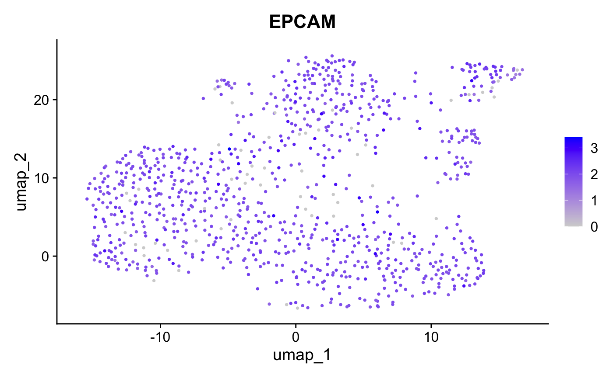
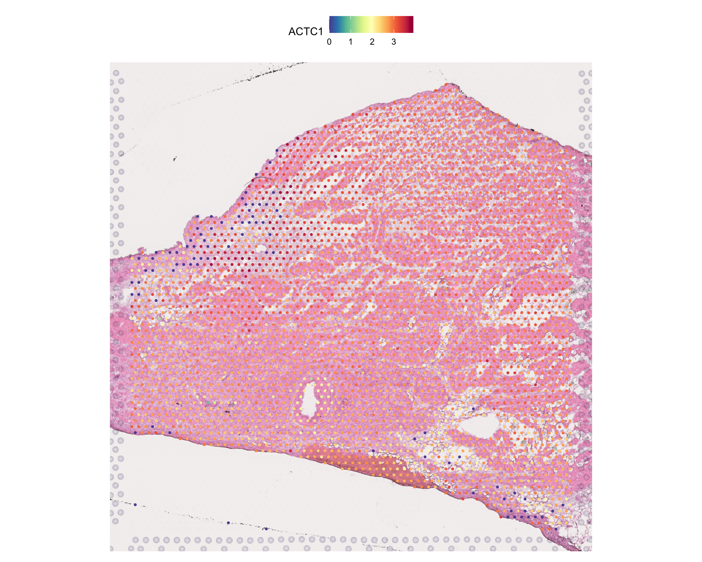

This vignette showcases how to convert between Seurat
objects and AnnData files via h5Seurat files. This allows
interoperability between Seurat and Scanpy.
Converting from Seurat to AnnData via h5Seurat
To demonstrate conversion from a Seurat object to an
AnnData file, we’ll use the pbmc3k.final dataset from
SeuratData - a processed PBMC dataset with clustering and UMAP.
library(SeuratData)
if (!"pbmc3k.final" %in% rownames(InstalledData())) {
InstallData("pbmc3k")
}
data("pbmc3k.final", package = "pbmc3k.SeuratData")
pbmc <- UpdateSeuratObject(pbmc3k.final)
pbmc
#> An object of class Seurat
#> 13714 features across 2638 samples within 1 assay
#> Active assay: RNA (13714 features, 2000 variable features)
#> 3 layers present: counts, data, scale.data
#> 2 dimensional reductions calculated: pca, umapThis is a fully processed Seurat object with clustering and dimensional reductions:

FeaturePlot(pbmc, features = "CD14", pt.size = 0.5)
Converting the Seurat object to an AnnData file is a
two-step process:
- Save the
Seuratobject as an h5Seurat file usingSaveH5Seurat() - Convert to AnnData using
Convert()
cat("Seurat layers:", paste(Layers(pbmc), collapse = ", "), "\n")
#> Seurat layers: counts, data, scale.data
SaveH5Seurat(pbmc, filename = "pbmc3k.h5Seurat", overwrite = TRUE)
Convert("pbmc3k.h5Seurat", dest = "h5ad", overwrite = TRUE)We can view the AnnData file in Scanpy:
import scanpy as sc
adata = sc.read_h5ad("pbmc3k.h5ad")
print(adata)
#> AnnData object with n_obs × n_vars = 2638 × 13714
#> obs: 'orig.ident', 'nCount_RNA', 'nFeature_RNA', 'seurat_annotations', 'percent.mt', 'RNA_snn_res.0.5', 'seurat_clusters'
#> var: 'vst.mean', 'vst.variance', 'vst.variance.expected', 'vst.variance.standardized', 'vst.variable'
#> uns: 'n_variable_features', 'neighbors', 'seurat'
#> obsm: 'X_pca', 'X_umap'
#> varm: 'PCs'
#> obsp: 'connectivities', 'distances'And visualize with cluster annotations:


The conversion preserves expression patterns - CD14 shows consistent distribution in both tools.
Converting from AnnData to Seurat via h5Seurat
To demonstrate conversion from AnnData to Seurat, we’ll use a colorectal cancer sample from CellxGene that’s bundled with the package.
h5ad_path <- system.file("testdata", "crc_sample.h5ad", package = "srtdisk")
if (file.exists(h5ad_path)) {
file.copy(h5ad_path, "crc_sample.h5ad", overwrite = TRUE)
} else {
download.file(
"https://datasets.cellxgene.cziscience.com/91cf9a95-0b9a-4ece-b8eb-7b9e3409a0d3.h5ad",
"crc_sample.h5ad", mode = "wb"
)
}
#> [1] TRUEView the h5ad file in Scanpy:
import scanpy as sc
adata_crc = sc.read_h5ad("crc_sample.h5ad")
print(adata_crc)
#> AnnData object with n_obs × n_vars = 935 × 25344
#> obs: 'total_counts', 'log1p_total_counts', 'Sample ID', 'PhenoGraph_clusters', 'Patient', 'Primary Site', 'Sample Type', 'Site', 'DC 1', 'DC 2', 'DC 3', 'DC 4', 'Module Absorptive Intestine Score', 'Module EMT Score', 'Module Injury Repair Score', 'Module Squamous Score', 'Module Neuroendocrine Score', 'Module Endoderm Development Score', 'Module Tumor ISC-like Score', 'Module Secretory Intestine Score', 'Module Intestine Score', 'palantir_pseudotime', 'palantir_neuroendocrine_branch_probability', 'palantir_squamous_branch_probability', 'Fetal, Conserved', 'Module Osteoblast Score', 'Treatment', 'donor_id', 'development_stage_ontology_term_id', 'sex_ontology_term_id', 'self_reported_ethnicity_ontology_term_id', 'disease_ontology_term_id', 'tissue_type', 'tissue_ontology_term_id', 'cell_type_ontology_term_id', 'assay_ontology_term_id', 'suspension_type', 'Tumor Status', 'is_primary_data', 'cell_type', 'assay', 'disease', 'sex', 'tissue', 'self_reported_ethnicity', 'development_stage', 'observation_joinid'
#> var: 'total_counts', 'highly_variable', 'gene', 'feature_is_filtered', 'feature_name', 'feature_reference', 'feature_biotype', 'feature_length', 'feature_type'
#> uns: 'citation', 'default_embedding', 'neighbors', 'organism', 'organism_ontology_term_id', 'schema_reference', 'schema_version', 'title'
#> obsm: 'X_umap'CellxGene datasets use Ensembl IDs as var_names by
default. The feature_name column contains gene symbols.
During conversion, srtdisk automatically uses gene symbols when
feature_name is available.
Note on data layers: During conversion, AnnData’s
Xmatrix (typically log-normalized data indicated bylog1p_total_countsin obs) is stored in Seurat’sdatalayer. Ifraw/Xexists, it becomes thecountslayer.
Visualize with scanpy before conversion:

import pandas as pd
sc.pp.normalize_total(adata_crc, target_sum=1e4)
sc.pp.log1p(adata_crc)
# Set gene symbols as var_names (force string conversion from Categorical)
adata_crc.var_names = pd.Index(adata_crc.var['feature_name'].astype(str).values)
adata_crc.var_names_make_unique()
adata_crc.write_h5ad("crc_normalized.h5ad")
sc.pl.umap(adata_crc, color='EPCAM', use_raw=False, title='EPCAM')
Convert to Seurat:
Convert("crc_normalized.h5ad", dest = "h5seurat", overwrite = TRUE)
crc <- LoadH5Seurat("crc_normalized.h5seurat")
# Verify layer mapping: X -> data (log-normalized), raw/X -> counts (if exists)
cat("Layers:", paste(Layers(crc), collapse = ", "), "\n")
#> Layers: counts, data
cat("Data layer range:", round(range(GetAssayData(crc, layer = "data")[1:100, 1:10]), 2), "\n")
#> Data layer range: 0 2.77
crc
#> An object of class Seurat
#> 25344 features across 935 samples within 1 assay
#> Active assay: RNA (25344 features, 3466 variable features)
#> 2 layers present: counts, data
#> 1 dimensional reduction calculated: umapVisualize Converted Data
The UMAP coordinates and normalized expression from scanpy are preserved:
DimPlot(crc, reduction = "umap", group.by = "tissue", pt.size = 0.5)
FeaturePlot(crc, features = "EPCAM", pt.size = 0.5)
The conversion preserves expression patterns - EPCAM shows consistent distribution in both tools.
Visium Spatial Data Conversion
For spatial transcriptomics data, we use the stxBrain dataset from SeuratData (Visium v2 format):
library(SeuratData)
if (!"stxBrain" %in% rownames(InstalledData())) {
InstallData("stxBrain")
}
brain <- UpdateSeuratObject(LoadData("stxBrain", type = "anterior1"))
brain <- NormalizeData(brain)
cat("Layers:", paste(Layers(brain), collapse = ", "), "\n")
#> Layers: counts, data
SpatialFeaturePlot(brain, features = "Hpca")
Convert to h5ad:
SaveH5Seurat(brain, filename = "stxBrain.h5Seurat", overwrite = TRUE)
Convert("stxBrain.h5Seurat", dest = "h5ad", overwrite = TRUE)View in Python with Squidpy:
import squidpy as sq
import scanpy as sc
adata_spatial = sc.read_h5ad("stxBrain.h5ad")
print(adata_spatial)
#> AnnData object with n_obs × n_vars = 2696 × 31053
#> obs: 'orig.ident', 'nCount_Spatial', 'nFeature_Spatial', 'slice', 'region'
#> var: 'features'
#> uns: 'seurat', 'spatial'
#> obsm: 'spatial'
sq.pl.spatial_scatter(adata_spatial, color="Hpca", library_id="anterior1",
img_res_key="lowres", size=1.5, use_raw=False)
Multi-assay Conversion (CITE-seq)
For multi-modal data like CITE-seq, each assay must be converted separately since h5ad format only supports a single matrix per file.
Conversion behavior:
- No assay specified: Only the default assay is converted
- Single assay specified: That specific assay is converted
- Multiple assays: Must call the function multiple times, once per assay
This example uses the cbmc dataset from SeuratData:
library(SeuratData)
if (!"cbmc" %in% rownames(InstalledData())) {
InstallData("cbmc")
}
data("cbmc", package = "cbmc.SeuratData")
cbmc <- UpdateSeuratObject(cbmc)
cat("Assays:", paste(Assays(cbmc), collapse = ", "), "\n")
#> Assays: RNA, ADT
# Convert RNA assay (default)
DefaultAssay(cbmc) <- "RNA"
SaveH5Seurat(cbmc, "cbmc_rna.h5seurat", overwrite = TRUE)
Convert("cbmc_rna.h5seurat", dest = "h5ad", overwrite = TRUE)Verify the converted file in scanpy:
import scanpy as sc
adata_rna = sc.read_h5ad("cbmc_rna.h5ad")
print(adata_rna)
#> AnnData object with n_obs × n_vars = 8617 × 20501
#> obs: 'orig.ident', 'nCount_RNA', 'nFeature_RNA', 'nCount_ADT', 'nFeature_ADT', 'rna_annotations', 'protein_annotations'
#> var: 'features'
#> uns: 'seurat'
print("obs columns:", list(adata_rna.obs.columns)[:10])
#> obs columns: ['orig.ident', 'nCount_RNA', 'nFeature_RNA', 'nCount_ADT', 'nFeature_ADT', 'rna_annotations', 'protein_annotations']The h5ad file preserves the full structure: gene expression matrix (X), cell metadata (obs), and gene info (var).
Convert the ADT assay separately:
# Convert ADT assay
DefaultAssay(cbmc) <- "ADT"
SaveH5Seurat(cbmc, "cbmc_adt.h5seurat", overwrite = TRUE)
Convert("cbmc_adt.h5seurat", dest = "h5ad", overwrite = TRUE)import scanpy as sc
adata_adt = sc.read_h5ad("cbmc_adt.h5ad")
print(adata_adt)
#> AnnData object with n_obs × n_vars = 8617 × 10
#> obs: 'orig.ident', 'nCount_RNA', 'nFeature_RNA', 'nCount_ADT', 'nFeature_ADT', 'rna_annotations', 'protein_annotations'
#> var: 'features'
#> uns: 'seurat'
print("ADT features:", list(adata_adt.var_names)[:10])
#> ADT features: ['CD3', 'CD4', 'CD8', 'CD45RA', 'CD56', 'CD16', 'CD11c', 'CD14', 'CD19', 'CD34']Each assay produces a separate h5ad file with the same cell metadata but different features.
Note on h5mu format: For true multi-modal interoperability, consider the MuData/h5mu format from the scverse ecosystem. The MuDataSeurat R package provides
ReadH5MU()andWriteH5MU()functions for Seurat objects. This allows storing multiple modalities in a single file with shared cell annotations, though some Seurat-specific features may not round-trip perfectly.
Spatial h5ad to Seurat
Converting native spatial h5ad files to Seurat is fully supported. We use a Visium colon sample from CellxGene that was processed with scanpy/squidpy standard workflows:
cache_dir <- tools::R_user_dir("srtdisk", which = "cache")
cache_path <- file.path(cache_dir, "visium_colon.h5ad")
if (!file.exists(cache_path)) {
dir.create(cache_dir, recursive = TRUE, showWarnings = FALSE)
message("Downloading Visium colon dataset (~1.7GB)...")
download.file(
"https://datasets.cellxgene.cziscience.com/ab9f4860-c0e3-444b-a982-38c13f0be6f5.h5ad",
cache_path, mode = "wb"
)
}
file.copy(cache_path, "visium_colon.h5ad", overwrite = TRUE)
#> [1] TRUEView the native spatial h5ad in Python:
import scanpy as sc
adata_spatial = sc.read_h5ad("visium_colon.h5ad")
print(adata_spatial)
#> AnnData object with n_obs × n_vars = 4992 × 32397
#> obs: 'in_tissue', 'array_row', 'array_col', 'n_genes_by_counts', 'log1p_n_genes_by_counts', 'total_counts', 'log1p_total_counts', 'sangerID', 'region', 'donor_type', 'age', 'facility', 'flushed', 'annotation_final', 'Adip1', 'Adip2', 'Adip3', 'B', 'B_plasma', 'CD14+Mo', 'CD16+Mo', 'CD4+T_act', 'CD4+T_naive', 'CD8+T_cytox', 'CD8+T_em', 'CD8+T_te', 'CD8+T_trans', 'DC', 'EC10_CMC-like', 'EC1_cap', 'EC2_cap', 'EC3_cap', 'EC4_immune', 'EC5_art', 'EC6_ven', 'EC7_endocardial', 'EC8_ln', 'FB1', 'FB2', 'FB3', 'FB4_activated', 'FB5', 'FB6', 'ILC', 'LYVE1+IGF1+MP', 'LYVE1+MP_cycling', 'LYVE1+TIMD4+MP', 'MAIT-like', 'Mast', 'Meso', 'MoMP', 'NC1_glial', 'NC2_glial_NGF+', 'NK_CD16hi', 'NK_CD56hi', 'Neut', 'PC1_vent', 'PC2_atria', 'PC3_str', 'SAN_P_cell', 'SMC1_basic', 'SMC2_art', 'T/NK_cycling', 'aCM1', 'aCM2', 'aCM3', 'aCM4', 'AVN_bundle_cell', 'PC4_CMC-like', 'vCM1', 'vCM2', 'vCM3_stressed', 'vCM4', 'vCM5', 'AVN_P_cell', 'CD4+T_Tfh', 'CD4+T_Th1', 'CD4+T_Th2', 'CD4+T_reg', 'NC5_glial', 'aCM5', 'Adip4', 'NC3_glial', 'NC6_schwann', 'EC9_FB-like', 'gdT', 'Adip1_abundance', 'Adip2_abundance', 'Adip3_abundance', 'B_abundance', 'B_plasma_abundance', 'CD14+Mo_abundance', 'CD16+Mo_abundance', 'CD4+T_act_abundance', 'CD4+T_naive_abundance', 'CD8+T_cytox_abundance', 'CD8+T_em_abundance', 'CD8+T_te_abundance', 'CD8+T_trans_abundance', 'DC_abundance', 'EC10_CMC-like_abundance', 'EC1_cap_abundance', 'EC2_cap_abundance', 'EC3_cap_abundance', 'EC4_immune_abundance', 'EC5_art_abundance', 'EC6_ven_abundance', 'EC7_endocardial_abundance', 'EC8_ln_abundance', 'FB1_abundance', 'FB2_abundance', 'FB3_abundance', 'FB4_activated_abundance', 'FB5_abundance', 'FB6_abundance', 'ILC_abundance', 'LYVE1+IGF1+MP_abundance', 'LYVE1+MP_cycling_abundance', 'LYVE1+TIMD4+MP_abundance', 'MAIT-like_abundance', 'Mast_abundance', 'Meso_abundance', 'MoMP_abundance', 'NC1_glial_abundance', 'NC2_glial_NGF+_abundance', 'NK_CD16hi_abundance', 'NK_CD56hi_abundance', 'Neut_abundance', 'PC1_vent_abundance', 'PC2_atria_abundance', 'PC3_str_abundance', 'SAN_P_cell_abundance', 'SMC1_basic_abundance', 'SMC2_art_abundance', 'T/NK_cycling_abundance', 'aCM1_abundance', 'aCM2_abundance', 'aCM3_abundance', 'aCM4_abundance', 'AVN_bundle_cell_abundance', 'PC4_CMC-like_abundance', 'vCM1_abundance', 'vCM2_abundance', 'vCM3_stressed_abundance', 'vCM4_abundance', 'vCM5_abundance', 'AVN_P_cell_abundance', 'CD4+T_Tfh_abundance', 'CD4+T_Th1_abundance', 'CD4+T_Th2_abundance', 'CD4+T_reg_abundance', 'NC5_glial_abundance', 'aCM5_abundance', 'Adip4_abundance', 'NC3_glial_abundance', 'NC6_schwann_abundance', 'EC9_FB-like_abundance', 'gdT_abundance', 'assay_ontology_term_id', 'cell_type_ontology_term_id', 'donor_id', 'development_stage_ontology_term_id', 'disease_ontology_term_id', 'is_primary_data', 'self_reported_ethnicity_ontology_term_id', 'sex_ontology_term_id', 'suspension_type', 'tissue_ontology_term_id', 'tissue_type', 'cell_type', 'assay', 'disease', 'sex', 'tissue', 'self_reported_ethnicity', 'development_stage', 'observation_joinid'
#> var: 'feature_is_filtered', 'feature_name', 'feature_reference', 'feature_biotype', 'feature_length', 'feature_type'
#> uns: 'cell_type_ontology_term_id_colors', 'citation', 'fullres_xml_metadata', 'organism', 'organism_ontology_term_id', 'schema_reference', 'schema_version', 'spatial', 'spatial_metadata', 'title'
#> obsm: 'X_means_cell_abundance_w_sf', 'X_prop', 'X_q05_cell_abundance_w_sf', 'X_q95_cell_abundance_w_sf', 'X_stds_cell_abundance_w_sf', 'spatial'
lib_id = list(adata_spatial.uns['spatial'].keys())[0]
spatial_data = adata_spatial.uns['spatial'][lib_id]
print("\nSpatial library:", lib_id)
#>
#> Spatial library: HCAHeartST13228106
print("Image keys:", list(spatial_data.get('images', {}).keys()))
#> Image keys: ['fullres', 'hires']
print("in_tissue column:", 'in_tissue' in adata_spatial.obs.columns)
#> in_tissue column: TrueNormalize, set gene symbols, and save for conversion:
import squidpy as sq
import scanpy as sc
import pandas as pd
adata_spatial = sc.read_h5ad("visium_colon.h5ad")
# Filter to tissue spots only
adata_spatial = adata_spatial[adata_spatial.obs['in_tissue'] == 1].copy()
sc.pp.normalize_total(adata_spatial, target_sum=1e4)
sc.pp.log1p(adata_spatial)
adata_spatial.var_names = pd.Index(adata_spatial.var['feature_name'].astype(str).values)
adata_spatial.var_names_make_unique()
adata_spatial.write_h5ad("visium_normalized.h5ad")
lib_id = list(adata_spatial.uns['spatial'].keys())[0]
sq.pl.spatial_scatter(adata_spatial, color='ACTC1', library_id=lib_id,
size=1.5, alpha=0.8, use_raw=False, title='ACTC1')
Convert to Seurat:
Convert("visium_normalized.h5ad", dest = "h5seurat", overwrite = TRUE)
visium <- LoadH5Seurat("visium_normalized.h5seurat")
# Verify layer mapping: X -> data (log-normalized)
cat("Layers:", paste(Layers(visium), collapse = ", "), "\n")
#> Layers: counts, data
visium
#> An object of class Seurat
#> 32397 features across 3452 samples within 1 assay
#> Active assay: RNA (32397 features, 0 variable features)
#> 2 layers present: counts, data
#> 5 dimensional reductions calculated: means_cell_abundance_w_sf, prop, q05_cell_abundance_w_sf, q95_cell_abundance_w_sf, stds_cell_abundance_w_sf
#> 1 spatial field of view present: HCAHeartST13228106Verify spatial data was preserved:
SpatialFeaturePlot(visium, features = "ACTC1", pt.size.factor = 2)
Note: Spatial images and coordinates are preserved during conversion. Some scanpy-specific structures (like neighbor graphs in
obsp) may need to be recomputed in Seurat usingFindNeighbors().
Data Mapping Reference
This section provides comprehensive mapping tables showing how data is converted between Seurat and AnnData formats.
Core Data Slots
Layer mapping during h5ad -> Seurat conversion:
| Seurat Slot | h5ad Source | Condition |
|---|---|---|
data |
X |
Always mapped |
counts |
raw/X |
If raw group exists |
counts |
X |
Fallback if no raw group |
scale.data |
N/A | Not stored in h5ad; recompute with ScaleData()
|
Note: The
dataslot always receivesX(which typically contains log-normalized values in scanpy workflows). If the h5ad file has arawgroup, itsXmatrix becomescounts. This matches the scanpy convention whereadata.Xholds processed data andadata.raw.Xholds raw counts. Scaled data (z-scores for ~2000 variable features) is not stored in standard h5ad files and should be recomputed in Seurat usingScaleData()after conversion.
Other data structures:
| Data Type | Seurat Location | AnnData Location |
|---|---|---|
| Cell metadata | meta.data |
obs |
| Feature metadata | meta.features |
var |
| UMAP coords | reductions$umap |
obsm['X_umap'] |
| PCA coords | reductions$pca |
obsm['X_pca'] |
| Variable features | VariableFeatures() |
var['highly_variable'] |
| Spatial coords | GetTissueCoordinates() |
obsm['spatial'] |
| Spatial images | Images() |
uns['spatial'][lib]['images'] |
| Neighbor graphs | Graphs() |
obsp['distances'/'connectivities'] |
Metadata Column Mapping
Common column name conventions differ between Seurat and scanpy workflows:
Seurat (meta.data) |
AnnData (obs) |
Description |
|---|---|---|
seurat_clusters |
leiden / louvain
|
Cluster assignments |
orig.ident |
batch / sample
|
Sample identifier |
nCount_RNA |
n_counts / total_counts
|
Total UMI per cell |
nFeature_RNA |
n_genes / n_genes_by_counts
|
Genes detected per cell |
percent.mt |
pct_counts_mt / percent_mito
|
Mitochondrial fraction |
cell_type |
cell_type / celltype
|
Cell type annotations |
Phase |
phase / cell_cycle_phase
|
Cell cycle phase |
Column Name Standardization Option
By default, column names are preserved exactly. Use
standardize = TRUE for automatic name conversion to scanpy
conventions:
| Seurat Name | scanpy Name (with standardize=TRUE) |
|---|---|
seurat_clusters |
clusters |
nCount_RNA |
n_counts |
nFeature_RNA |
n_genes |
percent.mt |
percent_mito |
Expression Scale Handling
Automatic Layer Detection: srtdisk maps layers based on h5ad structure:
| h5ad Source | Seurat Destination | Condition |
|---|---|---|
X |
data |
Always |
raw/X |
counts |
If raw group exists |
X |
counts |
Fallback if no raw
|
When Scales Match: If h5ad follows scanpy
conventions (X = log-normalized, raw.X =
counts), no additional processing needed after conversion.
When Scales Differ: If X contains raw
counts instead of normalized data:
# Normalize after conversion
seurat_obj <- NormalizeData(seurat_obj)Warning: Do NOT normalize in both Python and R - this double-normalizes data.
Indexing Conventions
Python uses 0-based indexing; R uses 1-based. srtdisk handles this automatically:
| Data Type | h5ad (Python) | Seurat (R) |
|---|---|---|
| Categorical codes | 0-indexed | 1-indexed factors |
| Cluster labels | Unchanged | Unchanged |
| Sparse matrix indices | 0-based (CSR/CSC) | 0-based (dgCMatrix) |
Example: Cluster 0 in scanpy remains labeled “0” in Seurat, but internally stored as factor level 1.
Structure Verification
After conversion, verify data integrity:
h5ad -> Seurat:
# Check layers and dimensions
cat("Layers:", paste(Layers(seurat_obj), collapse = ", "), "\n")
cat("Cells:", ncol(seurat_obj), "Genes:", nrow(seurat_obj), "\n")
# Verify data ranges (log-normalized data typically 0-6)
cat("Data range:", range(GetAssayData(seurat_obj, layer = "data")[1:100, 1:10]), "\n")
# Check metadata preserved
head(seurat_obj[[]])Seurat -> h5ad:
Session Info
sessionInfo()
#> R version 4.5.2 (2025-10-31)
#> Platform: aarch64-apple-darwin20
#> Running under: macOS Tahoe 26.2
#>
#> Matrix products: default
#> BLAS: /System/Library/Frameworks/Accelerate.framework/Versions/A/Frameworks/vecLib.framework/Versions/A/libBLAS.dylib
#> LAPACK: /Library/Frameworks/R.framework/Versions/4.5-arm64/Resources/lib/libRlapack.dylib; LAPACK version 3.12.1
#>
#> locale:
#> [1] en_US.UTF-8/en_US.UTF-8/en_US.UTF-8/C/en_US.UTF-8/en_US.UTF-8
#>
#> time zone: America/Indiana/Indianapolis
#> tzcode source: internal
#>
#> attached base packages:
#> [1] stats graphics grDevices utils datasets methods base
#>
#> other attached packages:
#> [1] stxKidney.SeuratData_0.1.0 stxBrain.SeuratData_0.1.2
#> [3] ssHippo.SeuratData_3.1.4 pbmcref.SeuratData_1.0.0
#> [5] pbmcMultiome.SeuratData_0.1.4 pbmc3k.SeuratData_3.1.4
#> [7] panc8.SeuratData_3.0.2 cbmc.SeuratData_3.1.4
#> [9] SeuratData_0.2.2.9002 srtdisk_0.2.0
#> [11] Seurat_5.4.0 SeuratObject_5.3.0
#> [13] sp_2.2-0 reticulate_1.44.1
#>
#> loaded via a namespace (and not attached):
#> [1] RColorBrewer_1.1-3 jsonlite_2.0.0 magrittr_2.0.4
#> [4] spatstat.utils_3.2-1 farver_2.1.2 rmarkdown_2.30
#> [7] fs_1.6.6 ragg_1.5.0 vctrs_0.7.0
#> [10] ROCR_1.0-11 spatstat.explore_3.7-0 htmltools_0.5.9
#> [13] sass_0.4.10 sctransform_0.4.3 parallelly_1.46.1
#> [16] KernSmooth_2.23-26 bslib_0.9.0 htmlwidgets_1.6.4
#> [19] desc_1.4.3 ica_1.0-3 plyr_1.8.9
#> [22] plotly_4.11.0 zoo_1.8-15 cachem_1.1.0
#> [25] igraph_2.2.1 mime_0.13 lifecycle_1.0.5
#> [28] pkgconfig_2.0.3 Matrix_1.7-4 R6_2.6.1
#> [31] fastmap_1.2.0 fitdistrplus_1.2-5 future_1.69.0
#> [34] shiny_1.12.1 digest_0.6.39 patchwork_1.3.2
#> [37] tensor_1.5.1 RSpectra_0.16-2 irlba_2.3.5.1
#> [40] textshaping_1.0.4 labeling_0.4.3 progressr_0.18.0
#> [43] spatstat.sparse_3.1-0 httr_1.4.7 polyclip_1.10-7
#> [46] abind_1.4-8 compiler_4.5.2 bit64_4.6.0-1
#> [49] withr_3.0.2 S7_0.2.1 fastDummies_1.7.5
#> [52] MASS_7.3-65 rappdirs_0.3.4 tools_4.5.2
#> [55] lmtest_0.9-40 otel_0.2.0 httpuv_1.6.16
#> [58] future.apply_1.20.1 goftest_1.2-3 glue_1.8.0
#> [61] nlme_3.1-168 promises_1.5.0 grid_4.5.2
#> [64] Rtsne_0.17 cluster_2.1.8.1 reshape2_1.4.5
#> [67] generics_0.1.4 hdf5r_1.3.12 gtable_0.3.6
#> [70] spatstat.data_3.1-9 tidyr_1.3.2 data.table_1.18.0
#> [73] spatstat.geom_3.7-0 RcppAnnoy_0.0.23 ggrepel_0.9.6
#> [76] RANN_2.6.2 pillar_1.11.1 stringr_1.6.0
#> [79] spam_2.11-3 RcppHNSW_0.6.0 later_1.4.5
#> [82] splines_4.5.2 dplyr_1.1.4 lattice_0.22-7
#> [85] survival_3.8-6 bit_4.6.0 deldir_2.0-4
#> [88] tidyselect_1.2.1 miniUI_0.1.2 pbapply_1.7-4
#> [91] knitr_1.51 gridExtra_2.3 scattermore_1.2
#> [94] xfun_0.56 matrixStats_1.5.0 stringi_1.8.7
#> [97] lazyeval_0.2.2 yaml_2.3.12 evaluate_1.0.5
#> [100] codetools_0.2-20 tibble_3.3.1 cli_3.6.5
#> [103] uwot_0.2.4 xtable_1.8-4 systemfonts_1.3.1
#> [106] jquerylib_0.1.4 dichromat_2.0-0.1 Rcpp_1.1.1
#> [109] globals_0.18.0 spatstat.random_3.4-4 png_0.1-8
#> [112] spatstat.univar_3.1-6 parallel_4.5.2 pkgdown_2.2.0
#> [115] ggplot2_4.0.1 dotCall64_1.2 listenv_0.10.0
#> [118] viridisLite_0.4.2 scales_1.4.0 ggridges_0.5.7
#> [121] purrr_1.2.1 crayon_1.5.3 rlang_1.1.7
#> [124] cowplot_1.2.0